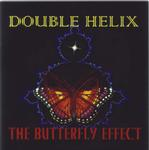

| Artist: | Double Helix |
| Title: | The Butterfly Effect |
| Label: | Seventh Star 7SS 031 |
| Length(s): | 73 minutes |
| Year(s) of release: | 2000 |
| Month of review: | 10/2000 |
| 1) | Perchance To Dream | 2.50 |
| 2) | It Doesn't Scan | 3.49 |
| 3) | Will You Walk With Me? | 4.02 |
| 4) | Disconnect | 4.07 |
| 5) | Surround Sound | 4.32 |
| 6) | The Seventh Star | 6.43 |
| 7) | Synthaesia | 4.04 |
| 8) | Android Rising | 2.44 |
| 9) | Merci, Mon Amie | 7.24 |
| 10) | Watch The Code: HPG2000 | 3.55 |
| 11) | QED | 5.03 |
| 12) | Vengeance Is Mine | 4.58 |
| 13) | Garibaldi (part 6 Of Insanity) | 2.43 |
| 14) | Legendary Hero | 5.01 |
| 15) | I Am Me | 4.43 |
| 16) | Entelechy (part 1 Of Three Finest Moments) | 3.27 |
| 17) | The Realisation Of Dreams | 3.37 |
Nice artwork.